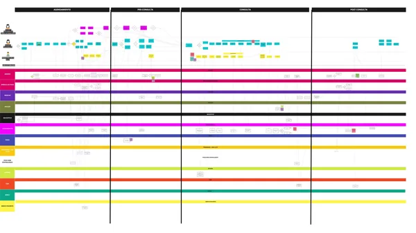

Contexto
Durante la pandemia de 2020, Clínica Alemana necesitaba transformar urgentemente sus canales de atención para permitir agendamiento de consultas médicas completamente en línea. Esta solución debía desarrollarse en paralelo con una nueva plataforma de teleconsulta, asegurando una experiencia integrada, fluida y segura para pacientes y equipos internos.
El reto no era solo tecnológico: muchas personas aún no estaban familiarizadas con entornos digitales, y el sistema heredado dificultaba tanto la navegación del paciente como la gestión del personal clínico. Además, trabajamos en un ecosistema complejo con múltiples equipos y consultoras desarrollando soluciones complementarias.
Equipos colaboradores:
- Continuum (mi equipo): Diseño de la agenda web
- Equipo paralelo de Continuum: Diseño de teleconsulta
- Globant: Desarrollo de la app Alemana Go
- 2Brains: Otra plataforma complementaria
- Clínica Alemana: Equipo de diseño interno
El Desafío
¿Cómo diseñar un nuevo canal digital de agendamiento médico que conectara de forma coherente con el servicio de teleconsulta, mejorando la experiencia del paciente en un contexto de alta urgencia sanitaria, coordinando múltiples equipos y plataformas en paralelo?
Mi Rol en el Proyecto
Como UX/Service Designer en Continuum, trabajé durante 14 meses en este proyecto, liderando el diseño estratégico del servicio, facilitando talleres, guiando la visión de experiencia y alineando flujos entre los distintos sistemas, equipos y canales.
Composición del equipo:
- Yo (UX/Service Designer + Researcher)
- 1 UX/UI Designer
- 7 Developers
- 1 Project Manager
Mis responsabilidades incluyeron:
- Mapear el journey de agendamiento y sus puntos críticos
- Diseñar la experiencia end-to-end, considerando casos presenciales y remotos
- Coordinar el diseño en paralelo con el equipo de teleconsulta y otros stakeholders
- Acompañar el despliegue incremental del servicio, desde pruebas internas hasta puesta en marcha total
- Asegurar la coherencia entre front y back, con foco en pacientes, médicos y administrativos
- Facilitar la colaboración entre Continuum, Globant, 2Brains y el equipo interno de Clínica Alemana
Enfoque y Proceso
Implementamos un proceso iterativo de diseño centrado en el usuario, adaptándonos constantemente a las necesidades emergentes durante la pandemia y coordinando múltiples frentes de trabajo simultáneos.
1. Investigación y Exploración
Realizamos investigación profunda para entender comportamientos, barreras y expectativas:
- Entrevistas a pacientes y personal administrativo
- Análisis del sistema heredado y sus fricciones
- Identificación de puntos críticos: lentitud, duplicidad de pasos, lenguaje poco claro, dificultad para autogestionar cambios
- Mapeo de necesidades de médicos y equipos administrativos
2. Diseño Colaborativo
Facilitamos talleres con múltiples stakeholders para co-crear la solución:
- Workshops internos para mapear necesidades del sistema y del negocio
- Diseño de experiencia digital para agendamiento presencial y remoto
- Integración de flujos administrativos (validación de datos, medios de pago, recordatorios)
- Creación de Service Blueprints para visualizar el ecosistema completo
- Coordinación constante con equipos de Globant y 2Brains
3. Coordinación con Teleconsulta
Trabajamos estrechamente con múltiples equipos para asegurar coherencia:
- Sincronización con el equipo que desarrollaba la plataforma de telemedicina
- Definición de puntos de cruce estratégicos entre agendar y consultar
- Alineación con la app Alemana Go desarrollada por Globant
- Asegurar que los usuarios no percibieran saltos entre plataformas
4. Implementación Incremental
Lanzamiento progresivo con mejora continua:
- 4 meses: Desarrollo intensivo bajo presión de la emergencia sanitaria
- Friends & Family: Validación de flujos en entorno controlado
- 6 meses: Lanzamiento público general
- +6 meses: Mejoras evolutivas basadas en feedback y nuevas prioridades institucionales
- Acompañamiento continuo durante 14 meses totales
Del Discovery al Delivery
El diseño no terminaba en el prototipo. Agenda Web se construyó dentro de un POD, con backlog, sprints y revisión cada dos semanas ante negocio, clínicos y desarrollo. Mi trabajo era llevar cada hallazgo hasta ahí: convertirlo en accionables priorizados, defenderlos, y volver con la validación del siguiente incremento.
1. El POD y mi lugar en él
Un equipo mixto de cliente y proveedores trabajando como una sola célula, con los roles repartidos así:
- Product Owner, Business Analyst y Scrum Master
- Technical Lead, desarrollo backend y frontend, DevOps y QA
- UX Designer, UX Writer y Visual Designer
- Mi rol: Service/UX Designer dentro del POD. El Product Owner era otra persona; yo diseñaba y corría la validación, y traducía los resultados en accionables priorizados que alimentaban el backlog.
2. El objetivo del sprint, escrito como hipótesis
Los objetivos de sprint no eran una lista de tareas sino una apuesta que se podía confirmar o descartar: «nosotros creemos que… esto se confirmará cuando…». Escribirlos así obligaba a acordar de antemano qué evidencia daríamos por buena, y convertía la revisión en una conversación sobre resultados y no sobre tareas terminadas.
3. Del hallazgo a la historia de usuario
Las decisiones de diseño no llegaban al equipo como pantallas sueltas, sino como historias escritas en primera persona desde el usuario, cada una con su criterio de aceptación y su origen: una entrevista, una observación en sala, un test. Ese es el paso que separa un prototipo bien resuelto de algo que un equipo puede estimar y meter en un sprint, y el que me tocaba defender en el refinamiento.
4. Validar antes de liberar
Validábamos en las propias salas de espera de la clínica, con pruebas de guerrilla cortas: pacientes reales, escenarios reales, sin laboratorio ni reclutamiento. Bastan unas pocas sesiones bien preparadas para detectar dónde se rompe un flujo, y el coste de hacerlas es tan bajo que se pueden repetir dentro del mismo sprint.
5. El alcance del MVP, cerrado por escrito
Antes de liberar, el alcance se cerraba de forma explícita: una lista de lo que faltaba para el MVP, otra de lo que se posponía, y una tercera con las dependencias que no estaban en manos del equipo —certificaciones, auditorías de seguridad, pruebas integrales—. Escribir esa frontera es lo que evita que un MVP acabe convertido en una versión 1.0 encubierta.
Resultados
Impactos específicos:
- Nuevo canal de agenda web publicado en 6 meses, en plena emergencia sanitaria
- Adopción progresiva por parte de pacientes, incluso aquellos con poca experiencia digital
- Coordinación fluida con la plataforma de teleconsulta y app Alemana Go
- Mejora significativa en tiempos de agendamiento y reducción de errores administrativos
- Mayor autonomía del paciente y menor carga para personal de atención
- El volumen de teleconsultas equivale a la actividad de una sucursal física completa
- Experiencia sin saltos ni fricciones entre múltiples plataformas y equipos
- Evolución constante del canal con estrategia de diseño incremental basada en evidencia
Aprendizajes Clave
Coordinación multi-equipo en contextos de alta presión
Trabajar simultáneamente con Continuum, Globant, 2Brains y el equipo interno de Clínica Alemana me enseñó la importancia de mantener canales de comunicación claros, documentación compartida y una visión de experiencia unificada incluso cuando los equipos trabajan en componentes distintos.
Diseño resiliente en tiempos de incertidumbre
La pandemia nos obligó a diseñar con flexibilidad extrema: los requisitos cambiaban semanalmente, las prioridades se ajustaban según la emergencia sanitaria, y debíamos equilibrar velocidad con calidad. Aprendí a crear sistemas de diseño adaptables que pudieran evolucionar sin colapsar.
La importancia del diseño incremental
El enfoque de lanzamiento progresivo (friends & family → público general → mejora continua) permitió validar hipótesis en entornos reales antes de escalar, reduciendo riesgos y mejorando la calidad final del servicio.
Reflexiones
Diseñar en sincronía con múltiples equipos, sin perder de vista al usuario.
Este proyecto me mostró que diseñar una agenda web puede parecer un reto técnico, pero en este caso, fue también un ejercicio profundo de empatía, claridad de procesos y resiliencia en medio del caos. Coordinar con múltiples consultoras y equipos internos, cada uno con sus propias metodologías y prioridades, requirió no solo habilidades de diseño sino también diplomacia, comunicación estratégica y una visión clara del norte común.
Acompañar este canal durante 14 meses me permitió ver cómo la experiencia digital puede transformarse desde lo esencial, creciendo con propósito y sentido. Ver cómo más de 70,000 personas pudieron acceder a atención médica de calidad en momentos críticos, muchas de ellas con poca experiencia tecnológica previa, reafirmó mi convicción sobre el poder del diseño centrado en las personas.
Este proyecto no solo transformó el servicio de la Clínica Alemana; transformó también mi forma de entender el diseño de servicios en ecosistemas complejos y mi capacidad para mantener el foco humano incluso bajo presión extrema.
Recursos Visuales
Entrega de Hallazgos
Presentación de hallazgos en modo storytelling para comunicar insights al equipo y stakeholders.
Service Blueprint
Entender las áreas, el servicio y cómo este debía integrarse a los sistemas existentes de la clínica.

Service Blueprint completo del sistema de agendamiento